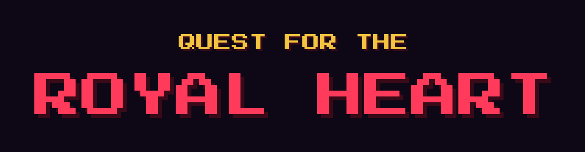
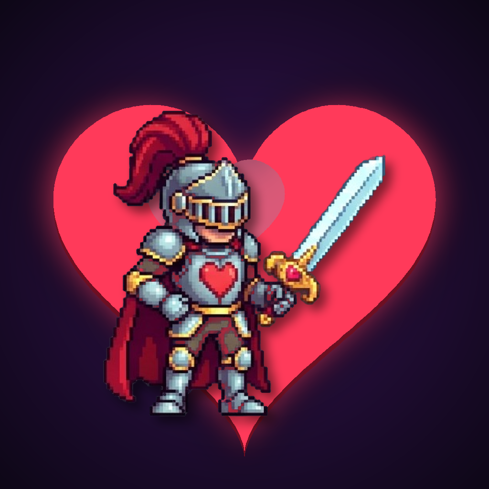
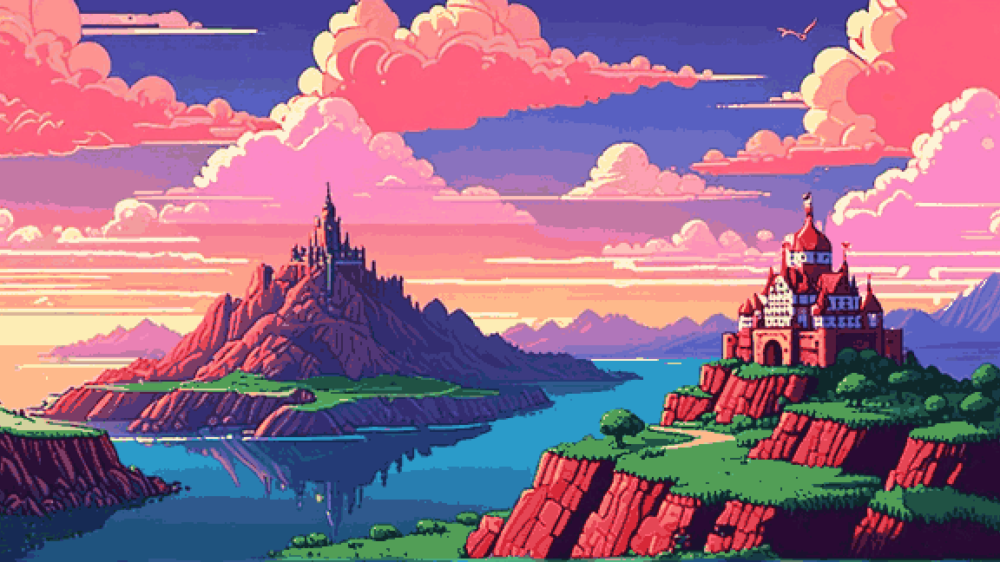
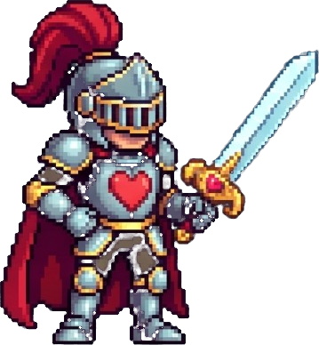
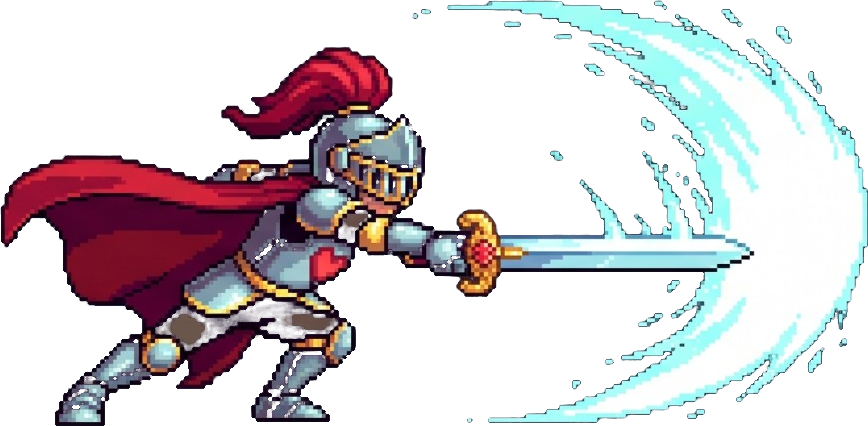

PRESS KIT
Everything you need to cover Quest for the Royal Heart. All screenshots, videos and logos on this page are free to use in articles, videos and streams about the game.
- Title
- Quest for the Royal Heart
- Developer
- Independent developer
- Genre
- 2D action platformer
- Platforms
- Windows (Steam). Steam Deck planned.
- Release
- Spring 2027. Demo in Steam Next Fest, February 2027.
- Price
- To be announced
- Players
- Single player, two playable heroes
- Controls
- Keyboard or gamepad
- Website
- questfortheroyalheart.com
- Free demo
- csc1980.itch.io/questfortheroyalheart (plays in the browser)
- Community
- Discord
- Press contact
- press@questfortheroyalheart.com
IN ONE LINE
A 16-bit platformer set inside a deck of cards: slash, craft and draw poker hands from fallen foes to rescue the Queen of Hearts from the Joker.
DESCRIPTION
The Fleet of Spades has raided the Kingdom of Hearts and carried off the Queen. Jack of Hearts sets out across seven card realms, from diamond caverns and clover forests to a frozen peak, a lava jungle, a sunken reef and an airship armada, to bring her home. At the end of the road waits the Trickster Joker, in a House of Cards built for one last show.
Every enemy drops a playing card. Chain them into poker hands mid-fight (a pair, a straight, a full house) for big bonuses, so every battle is also a hand of cards.
FEATURES
- Poker hands from your foes: each defeated enemy deals you a card.
- Nine bosses, then the Joker: kings, a glacier golem, a lava matriarch, a pharaoh, a sea leviathan and an airship captain, each with telegraphed attacks to learn and punish.
- Ride a dragon: hatch Rubywing and breathe fire across a volcano.
- The Royal Tourney: take the lance against the Jack of Spades on horseback.
- Craft your way through: gather timber, twine and stone, and build ladders, bridges and tools at card tables.
- Secrets in every stage: find the hidden Royal Suits, and speedrun stages for best times.
- Tight, forgiving controls: jump grace, corner correction, fast fall and a one-second respawn.
VIDEOS
All with the game's own sound unless marked silent. The vertical cuts (9:16) are made for TikTok, Shorts and Reels.
Official trailer (53 s, with sound) · download. Full 1080p60 master on request.
Poker hands: five cards make a Royal Straight Flush (14 s) · download
Boss fight: the King of Diamonds (35 s) · download
Vertical: poker hands (14 s) · download
Vertical: Skyfall, the parachute drop (28 s) · download
Vertical: riding Rubywing (21 s) · download
Earlier clips (silent)
Riding Rubywing over the volcano (10 s) · download
Boss fight: the Glacier Golem (21 s) · download
The Royal Tourney joust (15 s) · download
Speedrun: Sunscorch Dunes (19 s) · download
Speedrun: the lava jungle (21 s) · download
Spoilers: the Joker final boss and the ending (34 s) · download
SCREENSHOTS
1920×1080 PNG, scaled up from the game's native pixel resolution with no smoothing. Click one to open the full size.


LOGOS AND ART



Logo on dark background

Square icon, 1024×1024

Title screen key art

Jack of Hearts, transparent PNG

Jack attacking, transparent PNGCONTACT
Press, review keys and interviews: press@questfortheroyalheart.com. Streamers and YouTubers are welcome to stream the game and the demo, and monetise those videos.